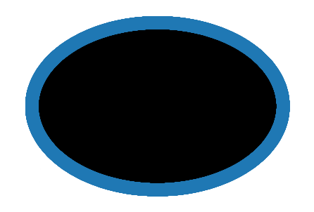

OIH Graph
Contents
OIH Graph¶
Some analysis of the OIH graphs
https://stackoverflow.com/questions/39274216/visualize-an-rdflib-graph-in-python
https://networkx.org/documentation/stable/reference/algorithms/link_analysis.html
!pip install -q SPARQLWrapper
!pip -q install pydotplus
!pip -q install graphviz
!pip -q install pydotplus
!pip -q install mimesis
!pip -q install minio
!pip -q install s3fs
!pip -q install SPARQLWrapper
!pip -q install boto3
!pip -q install 'fsspec>=0.3.3'
!pip -q install rdflib # !pip install -q -e git+https://github.com/RDFLib/rdflib.git#egg=rdflib
!pip -q install rdflib-jsonld
!pip -q install PyLD==2.0.2
!pip -q install kglab
ERROR: pip's dependency resolver does not currently take into account all the packages that are installed. This behaviour is the source of the following dependency conflicts.
graph-notebook 2.1.4 requires networkx==2.4, but you have networkx 2.5.1 which is incompatible.
aiobotocore 1.3.3 requires botocore<1.20.107,>=1.20.106, but you have botocore 1.21.10 which is incompatible.
ERROR: pip's dependency resolver does not currently take into account all the packages that are installed. This behaviour is the source of the following dependency conflicts.
graph-notebook 2.1.4 requires networkx==2.4, but you have networkx 2.5.1 which is incompatible.
boto3 1.18.4 requires botocore<1.22.0,>=1.21.4, but you have botocore 1.20.106 which is incompatible.
from SPARQLWrapper import SPARQLWrapper, JSON
import pandas as pd
import dask, boto3
import dask.dataframe as dd
import numpy as np
import json
import geopandas
import matplotlib.pyplot as plt
import shapely
import kglab
#@title
def get_sparql_dataframe(service, query):
"""
Helper function to convert SPARQL results into a Pandas data frame.
"""
sparql = SPARQLWrapper(service)
sparql.setQuery(query)
sparql.setReturnFormat(JSON)
result = sparql.query()
processed_results = json.load(result.response)
cols = processed_results['head']['vars']
out = []
for row in processed_results['results']['bindings']:
item = []
for c in cols:
item.append(row.get(c, {}).get('value'))
out.append(item)
return pd.DataFrame(out, columns=cols)
Some inspection queries for OIH Graph¶
oihgraph = "https://graph.collaborium.io/blazegraph/namespace/oihdev/sparql"
rp3 = """
prefix prov: <http://www.w3.org/ns/prov#>
PREFIX con: <http://www.ontotext.com/connectors/lucene#>
PREFIX luc: <http://www.ontotext.com/owlim/lucene#>
PREFIX con-inst: <http://www.ontotext.com/connectors/lucene/instance#>
PREFIX rdfs: <http://www.w3.org/2000/01/rdf-schema#>
PREFIX schema: <https://schema.org/>
PREFIX schemaold: <http://schema.org/>
PREFIX rdf: <http://www.w3.org/1999/02/22-rdf-syntax-ns#>
SELECT DISTINCT ?g ?s ?wat ?orgname ?domain ?type ?score ?name ?url ?lit ?description ?headline
WHERE
{
?lit bds:search "coral" .
?lit bds:matchAllTerms "false" .
?lit bds:relevance ?score .
?s ?p ?lit .
graph ?g {
?s ?p ?lit .
?s rdf:type ?type .
OPTIONAL { ?s schema:name ?name . }
OPTIONAL { ?s schema:headline ?headline . }
OPTIONAL { ?s schema:url ?url . }
OPTIONAL { ?s schema:description ?description . }
}
?sp prov:generated ?g .
?sp prov:used ?used .
?used prov:hadMember ?hm .
?hm prov:wasAttributedTo ?wat .
?wat rdf:name ?orgname .
?wat rdfs:seeAlso ?domain
}
ORDER BY DESC(?score)
LIMIT 30
OFFSET 0
"""
dfrp3 = get_sparql_dataframe(oihgraph, rp3)
dfrp3.head(10)
| g | s | wat | orgname | domain | type | score | name | url | lit | description | headline | |
|---|---|---|---|---|---|---|---|---|---|---|---|---|
| 0 | urn:gleaner:milled:obis:13392d707024cdd4e509d6... | t12576 | https://www.re3data.org/repository/obis | Ocean Biodiversity Information System | https://obis.org | https://schema.org/Dataset | 1.0 | Coral Reef Evaluation and Monitoring Project F... | https://obis.org/dataset/b91d89db-79d6-4bd3-84... | coral | The purpose of the Coral Reef Evaluation and M... | None |
| 1 | urn:gleaner:milled:obis:18d1180a74c200d06f9114... | t13860 | https://www.re3data.org/repository/obis | Ocean Biodiversity Information System | https://obis.org | https://schema.org/Dataset | 1.0 | Coral Reef Evaluation and Monitoring Project D... | https://obis.org/dataset/46005357-02b8-4f17-b0... | coral | The purpose of the Coral Reef Evaluation and M... | None |
| 2 | urn:gleaner:milled:obis:24bac898cda34444176ec4... | t16445 | https://www.re3data.org/repository/obis | Ocean Biodiversity Information System | https://obis.org | https://schema.org/Dataset | 1.0 | Coral Reef Evaluation and Monitoring Project F... | https://obis.org/dataset/d4ec17b8-fc96-49b9-b7... | coral | The purpose of the Coral Reef Evaluation and M... | None |
| 3 | urn:gleaner:milled:obis:24d453e3a4ea6d1f117e5c... | t16471 | https://www.re3data.org/repository/obis | Ocean Biodiversity Information System | https://obis.org | https://schema.org/Dataset | 1.0 | Coral Reef Evaluation and Monitoring Project F... | https://obis.org/dataset/36bca81c-6d77-4fd4-a9... | coral | The purpose of the Coral Reef Evaluation and M... | None |
| 4 | urn:gleaner:milled:obis:2524f94920efb8f87029bf... | t16581 | https://www.re3data.org/repository/obis | Ocean Biodiversity Information System | https://obis.org | https://schema.org/Dataset | 1.0 | Interacciones entre Corales y Céspedes algale... | https://obis.org/dataset/e39be6ef-3c91-4e97-ba... | coral | Para el componente denominado âInteracción ... | None |
| 5 | urn:gleaner:milled:obis:2bf98aa888d856b8706176... | t18254 | https://www.re3data.org/repository/obis | Ocean Biodiversity Information System | https://obis.org | https://schema.org/Dataset | 1.0 | Coral Reef Evaluation and Monitoring Project F... | https://obis.org/dataset/431f96f7-521c-4182-ae... | coral | The purpose of the Coral Reef Evaluation and M... | None |
| 6 | urn:gleaner:milled:obis:2d67f3625478df2c1520ae... | t18644 | https://www.re3data.org/repository/obis | Ocean Biodiversity Information System | https://obis.org | https://schema.org/Dataset | 1.0 | Coral Reef Evaluation and Monitoring Project D... | https://obis.org/dataset/d88a91c1-2685-4afa-9a... | coral | The purpose of the Coral Reef Evaluation and M... | None |
| 7 | urn:gleaner:milled:obis:30c1e35e0d4a09e3aafd38... | t19399 | https://www.re3data.org/repository/obis | Ocean Biodiversity Information System | https://obis.org | https://schema.org/Dataset | 1.0 | Coral Reef Evaluation and Monitoring Project D... | https://obis.org/dataset/b856037f-bbdf-45da-9b... | coral | The purpose of the Coral Reef Evaluation and M... | None |
| 8 | urn:gleaner:milled:obis:384060928d22941acabcb6... | t21027 | https://www.re3data.org/repository/obis | Ocean Biodiversity Information System | https://obis.org | https://schema.org/Dataset | 1.0 | Nematoda from Kenya and Zanzibar | https://obis.org/dataset/aa9787d6-c4db-4fde-8e... | Coral | Data on the species and trophic composition of... | None |
| 9 | urn:gleaner:milled:obis:3c03fa0cea67f703cdf249... | t21600 | https://www.re3data.org/repository/obis | Ocean Biodiversity Information System | https://obis.org | https://schema.org/Dataset | 1.0 | Coral Reef Evaluation and Monitoring Project F... | https://obis.org/dataset/c170a0a3-c669-436b-a1... | coral | The purpose of the Coral Reef Evaluation and M... | None |
import rdflib
from rdflib.extras.external_graph_libs import rdflib_to_networkx_multidigraph
from rdflib.extras.external_graph_libs import rdflib_to_networkx_digraph
import networkx as nx
import matplotlib.pyplot as plt
import gzip
with gzip.open('./data/oceanexperts_graph.nq.gz', 'rb') as f:
file_content = f.read()
g = rdflib.Graph()
g.parse(data = file_content, format="nquads")
G = rdflib_to_networkx_digraph(g)
# G = rdflib_to_networkx_multidigraph(result)
# # Plot Networkx instance of RDF Graph
# pos = nx.spring_layout(G, scale=2)
# edge_labels = nx.get_edge_attributes(G, 'r')b
# #nx.draw_networkx_edge_labels(G, pos, labels=edge_labels)
# nx.draw_networkx_edge_labels(G, pos)
# nx.draw(G, with_labels=True)
pr = nx.pagerank(G,alpha=0.9)
# for key, value in pr.items():
# print(key, ' : ', value)
import pandas as pd
prdf = pd.DataFrame.from_dict(pr, orient='index')
prdf.dtypes
0 float64
dtype: object
prdf.sort_values(by=0,ascending=False, inplace=True,)
prdf.head(20)
| 0 | |
|---|---|
| https://schema.org/Place | 0.058482 |
| https://schema.org/CourseInstance | 0.018446 |
| https://schema.org/Course | 0.016571 |
| UNESCO/IOC Project Office for IODE Wandelaarkaai 7 - Pakhuis 61 B-8400 Oostende Belgium | 0.007863 |
| Russia | 0.007497 |
| UNESCO/IOC Project Office for IODE Wandelaarkaai 7 8400 Oostende Belgium | 0.006203 |
| Wandelaarkaai 7 8400 Oostende Belgium | 0.003761 |
| Belgium | 0.002931 |
| RV Professor Logachev Russia | 0.002624 |
| UNESCO / IOC Project Office for IODE Wandelaarkaai 7 8400 Oostende Belgium | 0.002360 |
| IOC Science and Communication Centre on Harmful Algae, University of Copenhagen University of Copenhagen, Department of Biology Øster Farimagsgade 2D DK-1353 Copenhagen K Denmark | 0.001830 |
| Instituto de Investigaciones Marinas y Costeras José Benito Vives de AndreisCalle 25 No. 2-55, Playa Salguero, Rodadero Santa Marta , Magdalena, Colombia | 0.001812 |
| "Ocean Valley", Pragathi Nagar (BO), Nizampet (SO) Hyderabad 500 090 Telangana India | 0.001812 |
| Kenya Marine and Fisheries Research Institute, Headquater & Mombasa Station PO Box 81651 Mombasa 080100 Kenya | 0.001548 |
| Calle 25 No. 2-55, Playa Salguero, Rodadero Santa Marta D.T.C.H., Magdalena, Colombia | 0.001542 |
| Institute of Oceanography and Environment Universiti Malaysia Terengganu (UMT), Mengabang Telipot 21030 Kuala Terengganu Terengganu Malaysia | 0.001271 |
| Australia | 0.001271 |
| , Colombia | 0.001271 |
| Qingdao China | 0.001018 |
| Wandelaarkaai 7 Oostende Belgium | 0.001018 |
nx.draw_circular(G, with_labels = False)
plt.show() # display

plt.hist([v for k,v in nx.degree(G)])
(array([3.499e+03, 0.000e+00, 0.000e+00, 0.000e+00, 0.000e+00, 2.000e+00,
0.000e+00, 0.000e+00, 0.000e+00, 1.000e+00]),
array([ 1. , 86.5, 172. , 257.5, 343. , 428.5, 514. , 599.5, 685. ,
770.5, 856. ]),
<BarContainer object of 10 artists>)

plt.hist(nx.centrality.betweenness_centrality(G).values())
(array([2200., 0., 0., 0., 0., 858., 0., 20., 0.,
424.]),
array([0.00000000e+00, 3.26437344e-08, 6.52874689e-08, 9.79312033e-08,
1.30574938e-07, 1.63218672e-07, 1.95862407e-07, 2.28506141e-07,
2.61149876e-07, 2.93793610e-07, 3.26437344e-07]),
<BarContainer object of 10 artists>)